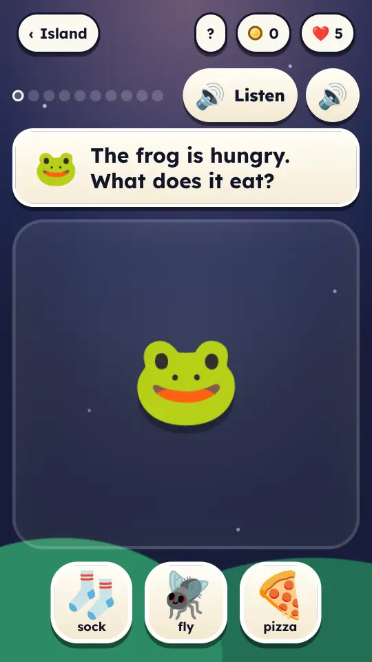

All labs › Biology › Pond Feeding
Biology lab · Bittu's Pond
Pond Feeding
तालाब का खाना · कौन क्या खाता है?
Feed the pond animals the food they really eat. The right food is gobbled up and silly food is refused.
- Biology
- Explorer · ages 4–7
- 10 levels
- English · हिंदी
- Free, no sign-up

How it works
Feed the frog
- The pond animal is hungry.
- Tap the food it really eats. A frog eats flies.
- The right food gets eaten. Silly food is refused.
Explorer labs read instructions aloud, and a wrong try never costs anything.
Why it works
The big idea
Every animal has its own menu: frogs catch flies, ducks nibble weeds and fish eat small bugs.
What children learn
Skills in this lab
- What different animals eat
- Living things need food
- Sorting by a rule
For parents and teachers
This lab is in the Explorer band (ages 4–7). Each player picks a band, and sees only the labs made for it.
Curio Island is free in the browser with no sign-up. Progress is saved on this device only. Ads are child-safe and non-personalised, and never appear inside a lab.
Part of Bittu's Pond on the island. 10 levels to finish.